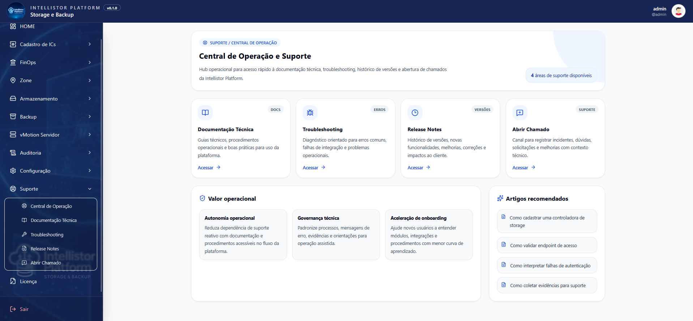

Intellistor
Intellistor Platform

Storage multivendor sem caos operacional
Ambientes críticos não podem depender apenas de planilhas, comandos manuais e conhecimento concentrado em poucas pessoas.
Manter governança, padronização e eficiência tornou-se um desafio crítico em ambientes que combinam múltiplos fabricantes, consoles, APIs, processos e tecnologias em constante evolução.
A Intellistor Platform atua como uma camada inteligente para conectar automação, operação, inventário, capacidade, auditoria e FinOps em uma visão única para times técnicos e gestores de infraestrutura.
Quando a operação de storage cresce, o controle não pode ficar manual.
Em ambientes multivendor, pequenas falhas de padronização, rastreabilidade e visibilidade podem virar risco operacional, aumento de custo e dependência excessiva de especialistas.
Operação manual demais
Provisionar LUNs, Host Groups, Zones e acessos por comandos manuais aumenta o risco de erro, retrabalho e indisponibilidade.
Ambiente espalhado
Cada fabricante tem console, API, nomenclatura e fluxo próprio, dificultando uma visão única da operação.
Pouca rastreabilidade
Sem histórico claro de quem executou, o que foi alterado e qual foi o resultado, auditorias e troubleshooting ficam mais lentos.
Capacidade imprevisível
Sem leitura contínua de crescimento, uso real e tendência, decisões de expansão acabam sendo tomadas tarde demais.
Custo fora do radar
Capacidade alocada, uso físico e desperdício financeiro ficam invisíveis quando dados técnicos não chegam à gestão.
Dependência de especialistas
Quando o conhecimento fica concentrado em poucas pessoas, a operação perde escala, previsibilidade e resiliência.

Uma plataforma para governar a operação de storage ponta a ponta
A Intellistor Platform centraliza inventário, automação, provisionamento, auditoria, análise de capacidade e visão financeira em uma experiência única para operação técnica e gestão executiva.
O objetivo é simples: reduzir esforço manual, padronizar processos, acelerar entregas e oferecer uma camada de inteligência sobre ambientes multivendor.
NextUma camada inteligente para transformar operação em controle.
A Intellistor Platform conecta storage, SAN, backup, automação, auditoria e FinOps em uma plataforma única — reduzindo esforço manual, aumentando governança e dando visibilidade técnica e financeira para decisões críticas.
Ecossistema tecnológico em um único lugar
Centralize a operação de storages, clusters, hosts, LUNs e host groups, sem depender de múltiplos consoles e fluxos isolados por fabricante.
Provisionamento padronizado
Transforme tarefas manuais em fluxos controlados, repetíveis e rastreáveis, com automação orientada a boas práticas operacionais.
Orquestração ponta a ponta
Conecte storage, switches, zones, fabrics e servidores em processos integrados, reduzindo falhas entre times, ferramentas e etapas operacionais.
FinOps aplicado à infraestrutura
Traduza capacidade alocada, uso físico e consumo técnico em visão financeira por controladora, host group, LUN, aplicação ou área de negócio.
Previsão antes do incidente
Identifique tendência de crescimento, risco de esgotamento e oportunidades de otimização antes que a capacidade vire urgência operacional.
Governança em cada execução
Registre eventos, entradas, saídas, usuários, permissões e resultados para criar trilha de auditoria e reduzir zonas cegas na operação.

Módulos da plataforma
Uma arquitetura modular para governança, FinOps e inteligência operacional.
Core — Inventário, provisionamento e automação de storage multivendor.
Backup — Governança e automação de rotinas críticas de backup.
FinOps — Custo, uso físico, capacidade alocada, chargeback e showback.
Predict — Tendência de consumo, risco de esgotamento e recomendações.
NextValor real: operação técnica conectada à decisão financeira.
A Intellistor Platform transforma rotinas de Storage e Backup em inteligência operacional: menos execução manual, mais governança, previsibilidade, rastreabilidade e visão de custo.
Redução do esforço operacional
Automatize rotinas repetitivas e libere o time técnico para atuar em decisões de arquitetura, melhoria contínua e evolução da infraestrutura.
Padronização da operação
Transforme conhecimento técnico em fluxos consistentes, reduzindo variações, retrabalho e dependência de procedimentos manuais.
Governança e auditoria
Registre ações, usuários, parâmetros, resultados e eventos para criar uma trilha confiável de execução e suporte à auditoria.
Previsibilidade de capacidade
Acompanhe crescimento, uso real e tendência para antecipar riscos de esgotamento antes que eles se tornem incidentes ou compras emergenciais.
FinOps para infraestrutura
Conecte capacidade alocada, uso físico e custo por GB para apoiar chargeback, showback, otimização e decisões de investimento.
Menos dependência de especialistas
Reduza concentração de conhecimento, preserve padrões operacionais e aumente a resiliência do time em ambientes multivendor.

Integração com o ecossistema corporativo
A Intellistor Platform foi desenhada para operar em ambientes heterogêneos, com foco em integração via APIs, automação segura e evolução modular.
Storages: Pure, Huawei, Hitachi.
SAN: Cisco MDS, Brocade.
Backup: Veritas NetBackup.
Virtualização e dados: VMware vCenter, APIs REST, bases SQL e integrações customizadas.
As integrações podem ser ativadas de forma progressiva, conforme maturidade, prioridade técnica e estratégia de implantação do cliente.
NextPara quem é a Intellistor Platform?
Para organizações que operam infraestrutura crítica e buscam simplificar a gestão de Storage, SAN e Backup com automação inteligente, governança nativa e foco total em resultados.
Empresas com operação crítica
Companhias que dependem de storage corporativo, SAN, backup e alta disponibilidade para sustentar aplicações, dados e serviços essenciais ao negócio.
Gestores de infraestrutura
Lideranças que precisam enxergar capacidade, risco, custo, eficiência e governança para priorizar investimentos e justificar decisões técnicas com impacto financeiro.
Times de Storage, Backup e DevOps
Equipes que executam provisionamentos, integrações, troubleshooting e rotinas críticas, mas precisam reduzir esforço manual, erro operacional e dependência de processos artesanais.
Ambientes multivendor
Operações com Huawei, Hitachi, NetApp, Pure, Cisco, Brocade, Veritas e outras tecnologias que precisam de uma camada única de controle, automação e rastreabilidade.
Áreas que buscam FinOps
Empresas que querem conectar capacidade alocada, uso físico, custo por GB, chargeback e showback para transformar infraestrutura em informação de gestão.
Projetos de modernização
Iniciativas que precisam reduzir tarefas manuais, melhorar governança, automatizar fluxos críticos e criar uma base operacional mais escalável.
Comece com um diagnóstico do seu ambiente.
Antes de automatizar, é preciso entender onde estão os gargalos, riscos, desperdícios e oportunidades de ganho operacional na sua infraestrutura.
Mapeamento técnico
Levantamento dos fabricantes, storages, fluxos operacionais, integrações, processos manuais e principais pontos de risco.
Potencial de ganho
Identificação de rotinas que podem ser automatizadas, indicadores de capacidade, oportunidades de FinOps e redução de esforço operacional.
Plano de evolução
Definição de uma jornada progressiva para adoção da Intellistor Platform, começando por entregas de maior impacto e menor risco.

Implantação progressiva e orientada a valor
A adoção da Intellistor Platform pode começar por um diagnóstico técnico, avançar para automações prioritárias e evoluir para módulos de FinOps, predição, backup e governança completa.
- 1. Diagnóstico: avaliação do ambiente, fabricantes, processos e dores operacionais.
- 2. MVP controlado: automação de fluxos prioritários com baixo risco.
- 3. Expansão modular: ativação de novos fabricantes, painéis e integrações.
- 4. Governança contínua: auditoria, métricas, FinOps e evolução da operação.

Suporte para clientes
Apoio técnico para operar, evoluir e extrair valor contínuo da Intellistor Platform.
Operação assistida — Uso da plataforma, validação de fluxos e evolução das automações.
Suporte especializado — Atendimento em Storage, SAN, Backup e integrações.
Documentação técnica — Guias, boas práticas e padrões para o time operacional.
O escopo e o nível de suporte são definidos conforme o plano contratado e as necessidades operacionais do cliente.
NextSua operação de storage pode ser mais inteligente, governada e rentável.
Dê o próximo passo para transformar rotinas manuais em automação, dados técnicos em decisões financeiras e infraestrutura crítica em vantagem operacional.
Fale com a Intellistor
Solicite uma demonstração, diagnóstico técnico, proposta comercial ou suporte para a Intellistor Platform.